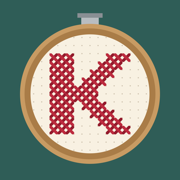

Turn a photo or an idea into a cross-stitch chart, then mark your stitches as you go.
Private by design. Charts are made on your device. No account, no tracking, no ads.
Questions, a chart that didn’t come out right, or an idea? Email don@donstech.com — I read every message.
Sharing with someone: long-press a pattern in your library and choose Share Pattern. They tap the link and get their own copy.
DMC is a trademark of DMC Corporation. Krosstitch is not affiliated with or endorsed by DMC. Thread colors are close approximations.